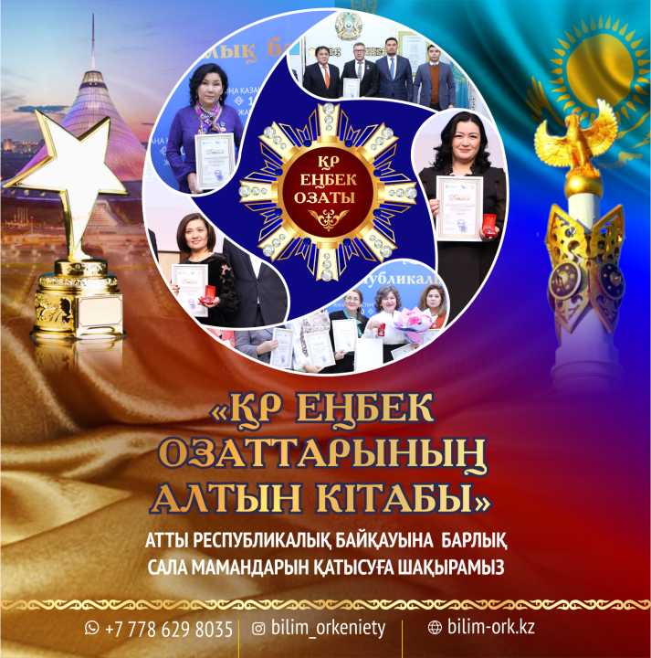

Приглашаем принять участие представителей всех отраслей в республиканском патриотическом конкурсе «ЗОЛОТАЯ КНИГА ОТЛИЧНИКОВ ТРУДА РЕСПУБЛИКИ КАЗАХСТАН», организованном центром «Bilim-orkenieti»!
Цель мероприятия: широкая пропаганда обществу послания Главы государства Касым-Жомарта Кемелевича Токаева народу Казахстана «Новый Казахстан: путь обновления и модернизации». Разъяснение молодежи, что независимость – это священное и сакральное понятие и о важности национальной идентичности и единства для укрепления независимости. Широкая пропаганда в обществе граждан, которые за годы независимости стали мастерами своего дела и вносят свой вклад в развитие страны, подают пример молодежи.
Участники республиканского конкурса:
Специалисты сферы образования и науки;
Депутаты маслихатов РК;
Специалисты сферы медицины;
Специалисты сферы спорта и культуры, искусства;
Специалисты в области литературы и искусства;
Предприниматели;
Общественные деятели;
Специалисты в области энергетики;
Специалисты сельского хозяйства;
Специалисты сферы информатики.
Правозащитники;
Экономисты;
Государственные служащие;
Талантливые молодые люди;
Социальные работники;
Специалисты в области разработки нефтяных и газовых месторождений;
Эколог, геолог, специалисты в области природных ресурсов
Условия конкурса:
Конкурс состоит из двух этапов. На первом этапе участник должен направить биографию о себе (в третьем лице), не более 2 страниц (14 кегль, Times New Roman), а также предоставить копии подтверждающих документов по достижениям (напр.: благодарственные письма, сертификат, диплом и др.).
Для опубликования в энциклопедии необходимо собрать в одной электронной папке биографию и качественные фотографии. Документы принимаются до 1 февраля 2023 года на электронную почту astana-20s@mail.ru
Победителям конкурса будут вручены: Золотая медаль отличников труда Республики Казахстан, свидетельство и почетная грамота. Также участники получат энциклопедию «Золотая книга отличников труда Республики Казахстан», куда войдут автобиографии всех победителей.
Церемония награждения конкурса состоится в городе Астана, в виде конференции, по адресу: Дом министерств, 14 подъезд, актовый зал. На презентацию книги будут приглашены все вошедшие в энциклопедию участники. Программа заключительной конференции будет отправлена всем участникам, прошедшим отбор. В ходе заключительной конференции известные личности страны будут вручать энциклопедии и нагрудные знаки.
Сайт организационной коллегии: https://bilim-ork.kz/
Инстаграм страница: @bilim_orkenieti
Организационная коллегия:
8778-629-80-35, 8778-742-74-40, 8-71-72-44-34-50